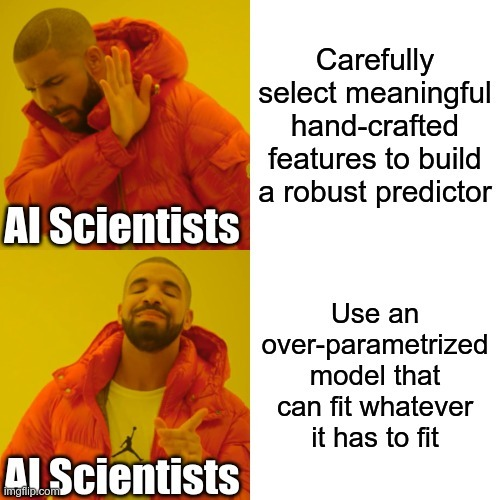

Despite their massive size, successful deep artificial neural networks can exhibit a remarkably small gap between train- ing and test performance. Conventional wisdom attributes small generalization error either to properties of the model family or to the regularization techniques used during training. Through extensive systematic experiments, we show how these traditional approaches fail to explain why large neural networks generalize well in practice. Specifically, our experi- ments establish that state-of-the-art convolutional networks for image classification trained with stochastic gradient methods easily fit a random labeling of the training data. This phenomenon is qualitatively unaffected by explicit regularization and occurs even if we replace the true images by completely unstructured random noise. We corroborate these experimental findings with a theoretical construc- tion showing that simple depth two neural networks already have perfect finite sample expressivity as soon as the num- ber of parameters exceeds the number of data points as it usually does in practice. We interpret our experimental findings by comparison with traditional models. We supplement this republication with a new section at the end summarizing recent progresses in the field since the original version of this paper.
